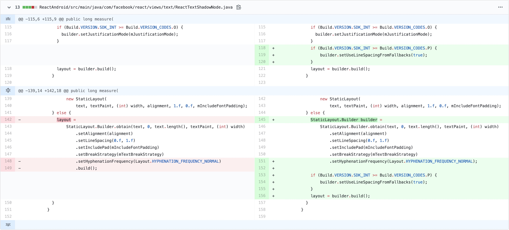

写在前面
React Native日常踩坑任务(1/1)
问题简述
React Native的Text组件在Android P和Android Q上无法正常显示长文本。
问题现象
-
异常情况，文本展示被截断
-
正常情况，文本展示完全
测试代码：
1 | export default class App extends Component<Props> { |
运行环境
-
React Native 0.59.9
-
Android Q
问题解决
该问题有多种解决方式，可以修改js代码解决，也可以修改源码解决。
通过修改js代码解决
- 解法一
设置textBreakStrategy=‘simple’
1 | export default class App extends Component<Props> { |
- 解法二
设置行高
1 | export default class App extends Component<Props> { |
🌰：一般行高为字体大小的1.2~1.5倍。如上，字体大小为16时，行高可以设置为16*1.5
通过修改源码解决
- 修改代码:
ReactAndroid/src/main/java/com/facebook/react/views/text/ReactTextShadowNode.java:

Ps. 截图取自官方仓库提交记录，该记录并非基于0.59.9版本做改动，因此代码左侧的行数可能不准确
- 从源码重新构建应用
Ps. 关于源码构建的相关内容，可参考React Native源码构建
问题分析
Google·Android开发者官网对于setUseLineSpacingFromFallbacks方法设计初衷的解释：
Set whether to respect the ascent and descent of the fallback fonts that are used in displaying the text (which is needed to avoid text from consecutive lines running into each other). If set, fallback fonts that end up getting used can increase the ascent and descent of the lines that they are used on.
For backward compatibility reasons, the default is false, but setting this to true is strongly recommended. It is required to be true if text could be in languages like Burmese or Tibetan where text is typically much taller or deeper than Latin text.
这个方法用于设置当前显示的后备字体是否需要考虑行距（这么做是因为我们需要避免相邻行互相重叠）。如果设置为true，最终使用的后备字体所在的行将会使用合适的行间距。
出于向后兼容的考虑，该标志位的默认值为false，但是强烈建议设置其为true。当显示文本为缅甸语、藏语等语言时，必须要设置为true，因为这些语言通常比拉丁语文本来得更高或深。
需要注意的是，该问题只在Android设备上出现，iOS不存在此问题，并且只有Android P和Android Q版本有此问题。本文基于0.59.9版本复现了此问题，但不排除先前版本亦存在此问题的可能性。另外，React Native开发团队似乎在0.61.x版本对此问题做了修复。
详见此处